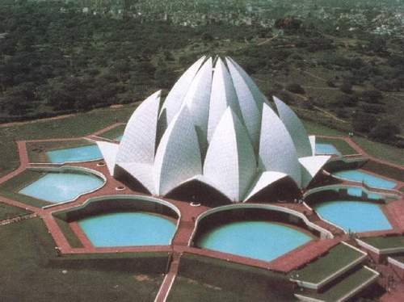
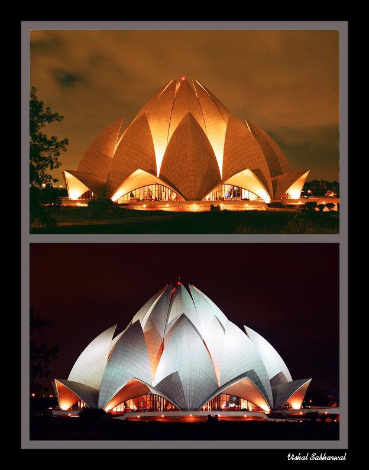

LOTUS TEMPLE
About Lotus temple :
It is a very recent architectural marvel of the Bahai faith, located in Kalkaji, south of Delhi. Shaped like a half opened Lotus flower, this temple is made of marble, cement, dolomite and sand. It is open to all faiths and is an ideal place for meditation and obtaining peace and tranquility. Bahai`s Temple is a marvel of modern architecture, which is visible from several spots in south Delhi. The lotus flower signifies purity and peace, a representation of the Manifestation of God, to the people of India. This ancient symbol has been given a modern and contemporary form in the structure of the Bahai House of Worship drawing into its sanctum sanctorum people from all races, religious backgrounds and culture from around the globe. It represents the Bahai faith, - an independent world religion; divine in origin, all embracing in scope, broad in its outlook, scientific in its method, humanitarian in its principles, and dynamic in the influence.
){kind=link}
Since its inauguration to public worship in December 1986, the Bahai House of Worship has drawn to its portals more than 50 million visitors, making it the most visited edifice in the world. People have come regardless of the scorching summer heat of Delhi, which sometimes rises above 40 C during the months of June to September, and have braced the chill and cold rains that Delhi experiences during winter. They have admired the beautiful lotus form of the Temple, and have been fascinated by the teachings of the Bahai Faith, which believes in oneness of God, oneness of religions and oneness of mankind.
){kind=link}
Structural Design :
In the raising of the House of Worship in New Delhi traditional Indian means of construction were employed coupled with the most modern Western engineering design. Fariborz Sahba, Canadian architect of Iranian origin, spent 10 years in designing and project management, and with the help of a team of about 800 engineers, technicians, artisans and workers brought to realisation one of the most complicated constructions in the world. Rising pure and unsullied above stagnant, muddy waters, the Indians have seen this flower as worthy of emulation, teaching them to be detached from material preoccupations. This temple joins six other Bahai temples around the world. Each of these Houses while sharing some basic design concepts, has its own distinct cultural identity embodying the principle of unity in diversity. The structure of the House is composed of three ranks of nine petals; each springing from a podium elevating the building above the surrounding plain. The first two ranks curve inward, embracing the inner dome; the third layer curves outward to form canopies over the nine entrances. The petals, constructed of reinforced white concrete cast in place, are clad in white marble panels, performed to surface profiles and patterns related to the geometry. Nine arches that provide the main support for the superstructure ring the central hall. Nine reflecting pools surround the building on the outside, their form suggesting the green leaves of the lotus flower. Translating the geometry of the design, in which there are virtually no straight lines, into the actual structure presented particular challenges in designing and erecting the framework. Not only was it difficult to align, so as to produce accurately the complex double-curved surfaces and their intersections, but also the closeness of the petals severely restricted workspace. Nevertheless the task was carried out entirely by the local labourers. Thanks to each one who contributed in its construction.
To avoid construction joints, petals were concreted in a continuous operation for approximately 48 hours. Concrete was carried up the staging by women bearing 50-pound loads in baskets balanced on their heads. All the steel reinforcing for the shells of the lotus petals was galvanised to avoid rust stains on the white concrete in the prevailing humid conditions, guaranteeing the life of the delicate shell structure of 6 to 18 cm thick shells of the petals. India is well endowed with human resources. The architect believes that this design could not have been executed anywhere else because it is rare to find the combination of traditional craftsmanship, pride in one's work, empathy for spiritual undertaking, perseverance under all odds and ample patience, as can be found in the Indian sub-continent. As commented by progressive Architecture of USA in their article on the Bahai Temple "It goes to prove that high-tech concepts do not always demand high-tech solutions." The Indian visitors, from the most sophisticated to the most simple, expressed perplexity at the absence of any idols. It has been a hard task since explaining to them that the all-pervasive Almighty cannot be put in any limited form. Hence, over the years the visitors from India have begun to understand that the purpose of the Bahai House of Worship is to unite the hearts of the people and bring them closer to their Creator.
Visiting time :
Summer : 9:00 a.m. - 7:00 p.m.
Winter : 9:30 a.m. - 5:30 p.m. Monday closed.